§030 秒速覽
五個數字抓骨架：漫長的無動物時代、拖了兩億年的氧化、海綿的低氧耐受、被高估的共存時間、新的寒武紀起點
§1先建立時間感：地球史壓成 24 小時
本站補充：原文用「幾十億年」「幾億年」敘事，先把這些數字換成看得見的尺度
地質年代的數字大到沒有感覺。把地球 45.4 億年的歷史壓成一天，每 1 秒大約是 5.3 萬年，每 1 分鐘大約是 315 萬年（本站計算）。用這把尺來看，整個上午都只有微生物；大氧化事件發生在中午前後；多細胞的真核生物要到下午 3 點多才留下化石；動物在晚上 7 點半到 9 點之間出現；寒武紀從 21:09 開始；智人只占最後 6 秒。
| 事件 | 距今 | 24 小時制 | 章節 |
|---|---|---|---|
| 所有現存生物的共同祖先 LUCA（分子鐘推算） | 約 42 億年 | 01:48 | §2 |
| Isua 岩石中的生物碳同位素訊號（仍有爭議） | >37 億年 | 04:26 | §2 |
| 公認最古老的疊層石（澳洲 Dresser 組） | 約 34.8 億年 | 05:36 | §2 |
| 大氧化事件：開始 → 永久氧化 | 24.3 → 22.2 億年 | 11:09 → 12:16 | §3 |
| 最古老的多細胞真核生物化石 | 約 16.35 億年 | 15:21 | §4 |
| 動物起源（分子鐘估計，跨度很大） | 8.33–5.93 億年 | 19:36–20:52 | §6 |
| 最古老的大型複雜化石（Mistaken Point） | 5.74 億年 | 20:58 | §7 |
| 寒武紀開始 | 5.388 億年 | 21:09 | §9 |
| 伯吉斯頁岩的動物 | 約 5.08–5.05 億年 | 21:19 | §10 |
| 二疊紀末大滅絕（三葉蟲在此消失） | 2.519 億年 | 22:40 | §10 |
| 非鳥恐龍滅絕 | 6,600 萬年 | 23:39 | — |
| 智人出現 | 約 30 萬年 | 23:59:54 | — |
§2微生物的地球：最早的生命證據與疊層石
對應原文〈In the Beginning〉：缺氧、富含甲烷的早期地球；37 億年的生命訊號；35 億年的疊層石
如果搭時光機回到 35 億年前，你會窒息：太古宙大氣裡的氧氣不到今日的百萬分之一，甲烷卻是今日的一百到一萬倍 Catling 2020。在這樣的世界裡，靠氧氣呼吸的動物根本活不下去，當時的生命全是微生物。
最早的生命，留下的是「化學指紋」
生物固定碳的時候偏好較輕的碳-12，所以生物來源的碳，碳-12 的比例會比無機碳高一點。格陵蘭 Isua 地區超過 37 億年的海底沉積岩裡，就找到了碳-12 偏多的石墨顆粒 Rosing 1999；後來又從石墨的奈米結構補強了「生物成因」的判斷 Ohtomo 2014。
原文把它說成「一種由生物製造的碳分子」，比較精確的說法是：這是碳同位素比例的訊號，不是某一種特定的分子。而且這麼古老的岩石都經過高溫高壓的變質作用，所有超過 35 億年的生命證據都還有爭議。更老的主張還有：加拿大 Labrador 39.5 億年的石墨 Tashiro 2017、加拿大 Nuvvuagittuq 至少 37.7 億年的赤鐵礦管狀構造 Dodd 2017，以及 41 億年鋯石裡的石墨包裹體 Bell 2015。另一條路是從現生生物的基因往回推：分子鐘估計所有現存生物的共同祖先 LUCA 約在 42 億年前 Moody 2024。
疊層石：微生物蓋的「千層派」
比化學指紋更直觀的證據是疊層石。海底的微生物（今天常以藍綠菌為主）長成一層有黏性的「微生物席」，把落下來的沉積顆粒黏住；碳酸鹽礦物在席裡沉澱，把顆粒膠結成一層；微生物再往上移，追著光長出新的一層。日積月累，就疊成圓頂或柱狀的岩石（圖 B）。
公認最古老的疊層石在澳洲西部的 Pilbara 地區：Dresser 組約 34.8 億年 Djokic 2017，Strelley Pool 燧石裡有 34.3 億年的疊層石「礁」Allwood 2006。格陵蘭曾有人報告 37 億年的疊層石 Nutman 2016，但重新檢查後，那些構造更可能是岩石變形造成的 Allwood 2018，目前沒有被普遍接受。原文說疊層石可追溯到 35 億年前，和目前的共識相符。
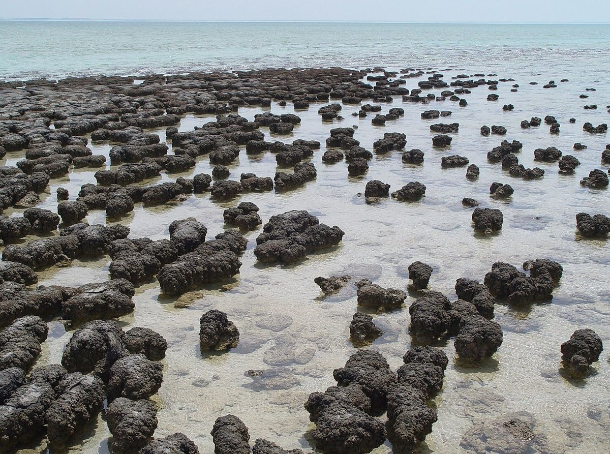

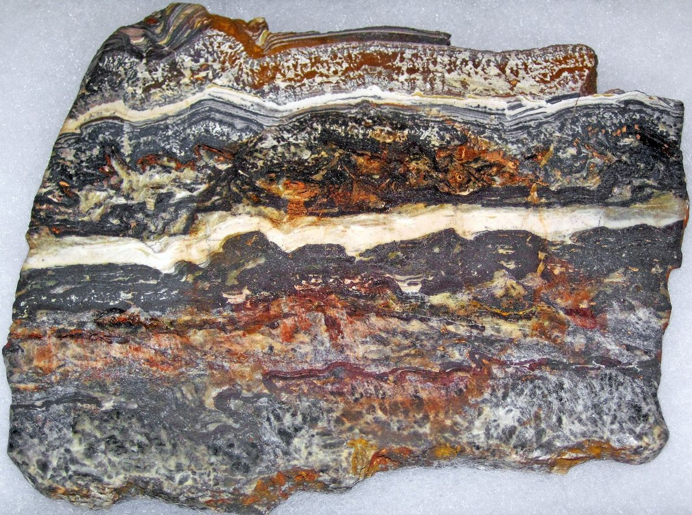
_1_(32857204117).jpg){kind=link}
表：「最古老的生命證據」各家主張
| 年代 | 地點 | 證據類型 | 現況 |
|---|---|---|---|
| 約 41 億年 | 澳洲 Jack Hills 鋯石 | 包裹在礦物中的石墨，碳同位素偏輕 | 只是「可能」生物成因 Bell 2015 |
| ≥37.7 億年 | 加拿大 Nuvvuagittuq | 熱液沉澱物中的赤鐵礦管與絲狀構造 | 有爭議 Dodd 2017 |
| >39.5 億年 | 加拿大 Labrador | 沉積岩中的石墨 | 有爭議 Tashiro 2017 |
| >37 億年 | 格陵蘭 Isua | 碳-12 偏多的石墨顆粒 | 原文採用的證據；仍有爭議 Rosing 1999；Ohtomo 2014 |
| 約 37 億年 | 格陵蘭 Isua | 疊層石狀構造 | 被重新解讀為岩石變形 Nutman 2016；Allwood 2018 |
| 約 34.8 億年 | 澳洲 Dresser 組 | 疊層石與陸上熱泉沉積 | 較廣泛接受 Djokic 2017 |
| 34.3 億年 | 澳洲 Strelley Pool | 疊層石礁 | 較廣泛接受 Allwood 2006 |
§3氧氣從哪裡來：藍綠菌與大氧化事件
對應原文〈An Oxygen Atmosphere〉：藍綠菌、氧氣的急遽上升、條帶狀鐵礦層、之後漫長的低氧
藍綠菌是第一批「產氧」的光合生物
藍綠菌用水當電子來源，靠陽光把二氧化碳變成養分，副產品就是氧氣。原文說它們是地球上第一批光合生物，這點要修正：光合作用比藍綠菌更早。南非 34.16 億年的 Buck Reef 燧石裡，已經有微生物席在完全缺氧的海水中行光合作用，用的電子來源最可能是氫氣，不會放出氧 Tice & Lowe 2004；Tice & Lowe 2006。藍綠菌真正的創舉，是成為第一批產氧的光合生物。光合作用怎麼一步步從不產氧走到產氧，可以參考本站的另一篇：光合作用從哪裡來？
藍綠菌確切在什麼時候出現，分子鐘的估計差很多：有的研究推到 33–36 億年前 Boden 2021，有的認為現生藍綠菌的共同祖先只有約 20 億年 Shih 2017。差異部分來自「藍綠菌」的定義是否包含已滅絕的早期分支。直接的細胞證據方面，目前最古老、帶有光合作用膜（類囊體）的化石是 17.8–17.3 億年 Demoulin 2024。原文的「至少 24 億年前」作為下限沒有問題。
大氧化事件：拖了兩億年的轉變
氧氣並不是藍綠菌一出現就開始累積。一般的解釋是：火山氣體、海水裡的二價鐵等還原性物質，會先把新產生的氧「吃掉」，要等這些消耗趕不上生產，氧才留得住。約 24.6–24.3 億年前，大氣氧氣開始上升，同時地球進入第一次全球冰期 Gumsley 2017。接下來約 2 億年，氧氣在「今日的十萬分之一」這條門檻上下來回震盪，到約 22.2 億年前才永久留下 Poulton 2021。從地質尺度看，這是一次轉變，但過程並不「突然」。而且多數研究認為，它比產氧光合作用的出現晚了數億年 Fournier 2021；也有研究認為兩者相距不遠 Shih 2017。在這之前，有些岩石似乎記錄了短暫、局部的「一絲氧氣」（whiffs of oxygen），但這些證據本身也有爭議 Crowe 2013；Anbar 2007；Slotznick 2022。
氧氣對許多厭氧微生物是有毒的，原文說氧氣上升讓牠們的環境變差，這是合理的推論。不過厭氧微生物並沒有消失，而是退到缺氧的沉積物和深水裡，至今仍很繁盛。
地質學家怎麼知道氧氣什麼時候出現？最主要的證據是硫同位素。大氣沒有氧、也就沒有臭氧層時，紫外線能深入低層大氣，分解火山噴出的二氧化硫，留下一種特殊的硫同位素比例（叫做「非質量分餾」，S-MIF）。這種比例能保存到岩石裡，是因為無氧時，硫會以好幾種不同的化學形態落到地面，各自帶著不同的訊號；一旦大氣的氧超過今日的十萬分之一左右，所有的硫都會先被氧化成硫酸鹽、在海水裡混在一起，特殊比例就被抹平了 Pavlov & Kasting 2002。岩石紀錄裡，這種訊號在約 24.5 億年以前普遍存在，約 20.9 億年以後就看不到了 Farquhar 2000。它就像一個「大氣有沒有氧」的開關。
條帶狀鐵礦層：與其說記錄氧氣，不如說記錄缺氧
條帶狀鐵礦層（BIF）是紅、黑色的富鐵層和燧石層一層層交替的岩石，今天全球主要的鐵礦多半來自它。原文把大氧化事件的證據放在 BIF 的變化上，這只說對了一半：BIF 在約 23 億年後變少，確實是氧氣上升的線索之一；但大部分 BIF 沉積在大氧化事件之前或同一時期 Bekker 2010，18.8 億年前短暫大量重現 Rasmussen 2012，新元古代的雪球地球時期又零星出現過 Cox 2013。
BIF 要形成，海水裡得先溶著大量的二價鐵，而二價鐵只有在缺氧的海水裡才能大量存在。所以 BIF 更適合理解成「早期海洋缺氧、富含鐵」的紀錄。至於鐵怎麼沉下來，原文描述的「含氧淺水和富鐵深水混合」仍是常用的解釋之一 Rasmussen 2012；另一種很可能的途徑是：某些不產氧的光合細菌可以直接把二價鐵氧化，不需要氧氣 Kappler 2005。
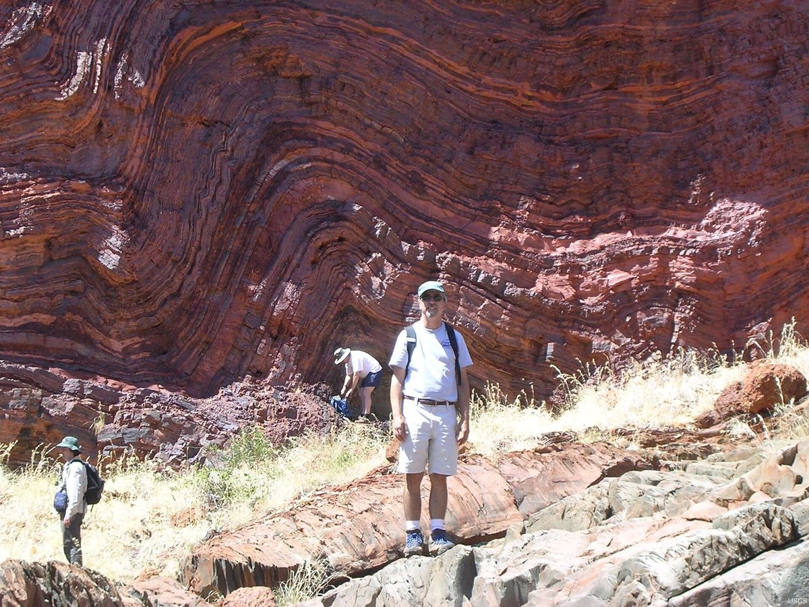

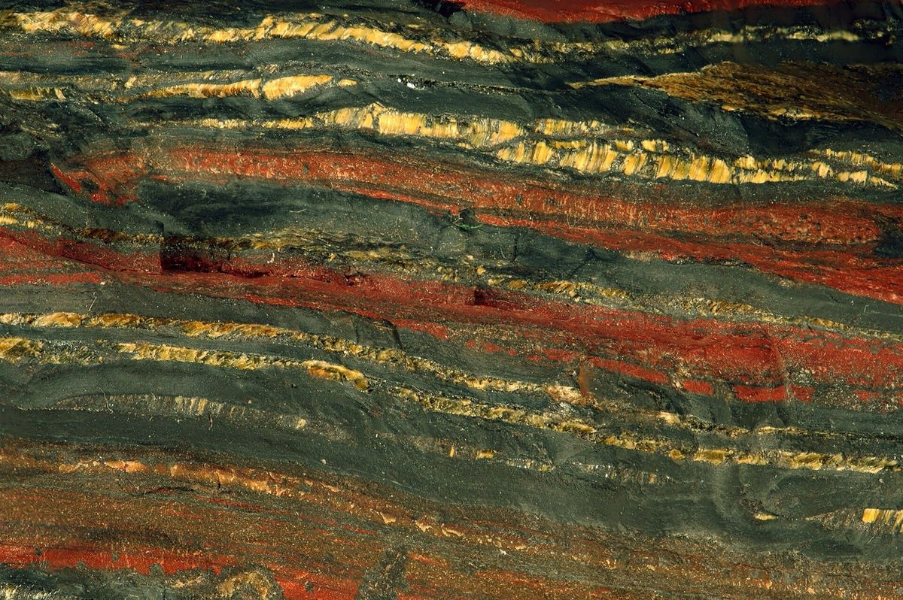
_(Hamersely_Group,_Neoarchean_to_Paleoproterozoic,_~2.47-2.55_Ga;_Hamersley_Range,_Western_Australia)_(15036345446).jpg){kind=link}
氧化之後：超量、崩落，再低迷十幾億年
大氧化事件之後的劇情比原文寫的曲折。約 22.2–20.6 億年前，碳同位素出現大幅正偏移（Lomagundi 事件），氧氣可能一度「超量」；約 20.2 億年前（大氧化事件剛結束時）的紀錄顯示，初級生產力（光合生物生產的有機物總量）崩落超過 80%，氧氣隨之回落 Canfield 2013；Hodgskiss 2019。接著是約 18–8 億年前常被稱為「無聊的十億年」的時期，這段時間的氧氣有多低還在爭論：一種估計不到今日的 0.1% Planavsky 2014，另一種從 14 億年前的岩石推算超過 4% Zhang 2016。
原文還提到死去的藍綠菌下沉、分解，會消耗氧氣。這是合理的簡化。不過從長期來看，決定氧氣能不能累積的，主要是有機碳被埋藏了多少：光合作用產生的氧，要等對應的有機碳被埋進沉積物、不再被分解，才會淨留在大氣裡 Canfield 2013；Lenton 2014。
- 「藍綠菌是第一批光合生物」→ 是第一批產氧的光合生物；不產氧的光合作用至少在 34 億年前就有了 Tice & Lowe 2004；Tice & Lowe 2006。
- 「BIF 的變化記錄了大氧化事件」→ 只說對一半：BIF 的衰退是線索之一，但大部分 BIF 早於大氧化事件，記錄的是缺氧、富鐵的海洋；判斷大氧化事件主要靠硫同位素訊號消失 Bekker 2010；Farquhar 2000。
- 「第一波氧氣之後，氧氣在低檔維持約二十億年」→ 從大氧化事件算到新元古代約 16–19 億年，量級沒錯；但中間有超量與崩落，真正長期低迷的是崩落之後的約 12 億年（約 20 億到 8 億年前，本站計算），而且低到什麼程度仍有爭議。
§4細胞大升級：細胞核與粒線體
對應原文〈Multicellular Life〉前半：微生物缺少特化細胞；粒線體來自共生；DNA 第一次被包進細胞核
把一個細菌和一個人體細胞放在顯微鏡下比較，差別一眼就看得出來：細菌（還有古菌，合稱原核生物）的 DNA 散在細胞裡，沒有核膜包住，也沒有粒線體這類有膜包覆的「胞器」；人體細胞則有細胞核、粒線體和複雜的內膜系統，體積通常也大得多。動物要長出神經、肌肉等各司其職的細胞，前提是先有這種複雜的細胞，也就是真核細胞。附帶一提，原文說「大多數微生物沒有胞器」，但「微生物」其實也包括很多單細胞的真核生物，例如酵母菌和各種原生生物。
一個古菌吞了一個細菌
粒線體負責把食物轉成細胞能用的能量。它原本是一種獨立生活的細菌，和今天的 α-變形菌是親戚，後來住進另一個細胞裡，雙方從此分不開 Roger 2017。原文沒有講「宿主」是誰：目前的證據指向一群叫 Asgard 古菌的微生物，真核生物就是從它們之中長出來的一支，最接近其中的 Hodarchaeales 這一群 Eme 2023。實驗室已經培養出活的 Asgard 古菌：它們沒有細胞核，卻已經有肌動蛋白骨架和分枝狀的突起，顯示真核細胞的一些「零件」在古菌親戚身上就已經存在 Imachi 2020；Rodrigues-Oliveira 2023。
藻類和植物後來又多吞了一次：把一種藍綠菌收編成葉綠體。這是另一次內共生，原文沒有提到。
先有細胞核，還是先有粒線體？
這是真核生物起源最大的爭論之一。一派認為粒線體帶來大量能量，細胞才負擔得起變複雜；另一派認為宿主先變複雜，才有能力吞下細菌。2026 年一篇研究用「基因複製事件」來定年，推論細胞核、內膜系統、細胞骨架和吞噬機制在 30–22.5 億年前就已陸續出現，粒線體是之後才加入的 Kay 2026。這個「晚粒線體」的結論很新，還需要更多檢驗。
時間點方面：真核生物的最後共同祖先（LECA）估計在約 12 億到超過 18 億年前 Brocks 2023；16.35 億年前的岩石裡已經有多細胞的真核生物化石 Miao 2024。但現代類型的真核生物要到約 8 億年前，才在海洋生態系裡占有重要地位 Brocks 2023。換句話說，複雜細胞出現後，又等了將近十億年才真正「得勢」。
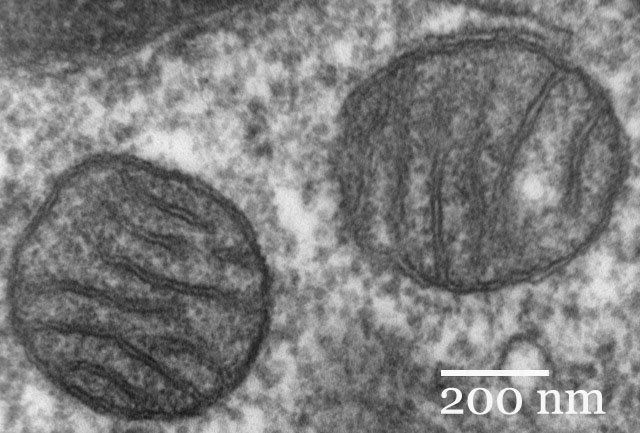
.jpg){kind=link}
§5從單打獨鬥到分工合作：多細胞
對應原文〈Multicellular Life〉後半：細胞聚在一起的好處，以及細胞開始分工
多細胞並不是動物的專利。動物、陸生植物、真菌、紅藻、褐藻等類群，各自獨立演化出了多細胞 Grosberg & Strathmann 2007。可見「聚在一起」這件事的好處夠大，大到在生命史上被重新發明了許多次。
實驗室裡重演多細胞的誕生
原文推測，細胞聚在一起可能是為了更有效率地進食，或是靠體型變大來保護自己。這兩個猜測都已經有實驗支持：
- 躲掠食者：單細胞的衣藻在有掠食者的環境下培養，約 750 個世代內就演化出多細胞的群體 Herron 2019。
- 一起吃飯：酵母菌把分解蔗糖的酵素分泌到細胞外，分解出的糖會四散，聚成一團的細胞能分到比較多 Koschwanez 2011。
- 越長越大：在實驗中篩選「沉得比較快」的酵母菌，很快就出現雪花狀的多細胞群體，還有簡單的分工 Ratcliff 2012；另一個長期實驗篩選 600 輪後，無氧代謝組的群體大到肉眼看得見，約變大 2 萬倍 Bozdag 2023。
動物的多細胞有一個重要特徵：身體是由同一個細胞分裂發育而來，而不是不同的細胞湊在一起 Grosberg & Strathmann 2007。所有細胞的基因都一樣，彼此的利益一致，分工才穩定。
動物的單細胞近親：領鞭毛蟲
現生生物中，和動物關係最近的單細胞生物是領鞭毛蟲。它有一根鞭毛，外面圍著一圈像衣領的微絨毛，這個構造和海綿用來濾食的「領細胞」非常相似（圖 F），只是領的形狀、鞭毛擺動的速度等細節仍有差異 Mah 2014。動物的祖先很可能就是一種用「領」捕捉細菌的單細胞或群體生物 Brunet 2017。領鞭毛蟲的基因組裡，已經有一些過去以為只有動物才有、幫助細胞彼此黏附的基因 King 2008。另一個動物近親 Chromosphaera perkinsii，甚至有類似動物胚胎早期分裂的發育過程 Olivetta 2024。
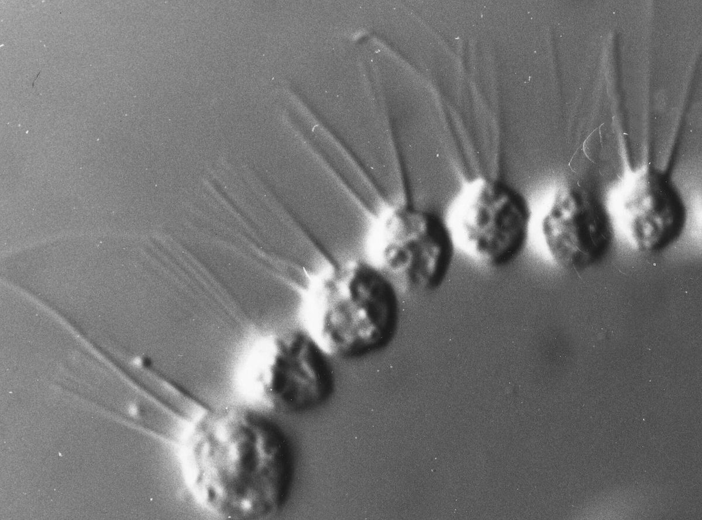

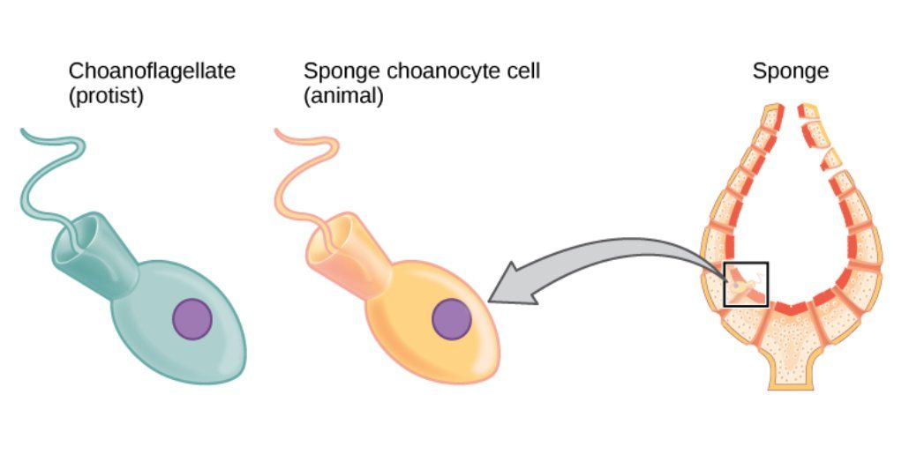

§6第一批動物：海綿
對應原文〈The First Animals〉：DNA 推算的起源年代、岩石中的海綿分子、低氧耐受、發育基因、第一個造礁者
動物什麼時候出現？分子鐘、分子化石、化石三條線索兜不攏
原文說 DNA 證據顯示動物約在 8 億年前出現。分子鐘的原理是：基因的變化大致穩定累積，比較現生動物的 DNA 差異，再用化石定出的年代當「校正點」，就能往回推算分家的時間。問題是，結果非常依賴選哪些化石當校正點。同一類資料，有的研究推算在約 8.3–6.5 億年前 dos Reis 2015（原作者稱為「成冰紀」，用的是當時起點約 8.5 億年的舊定義；以現行年代表，大半落在更早的拉伸紀），有的推到埃迪卡拉紀早期的 6.13–5.93 億年前 Carlisle 2024；2026 年又有研究質疑其中一個關鍵校正點，結果又回到約 8–7 億年前 Lole Durbin 2026。比較穩妥的說法是：動物大概出現在 8 億到 6 億年前之間，確切年代仍有爭議。還要注意，分子鐘推算的是冠群動物（所有現生動物的最後共同祖先及其後代）的起源；在它之前，可能還有更早分出、沒有留下現生後代的動物。
岩石裡的海綿分子：證據還是巧合？
原文提到，岩石中保存了約 7 億年前的海綿化學分子。這指的是阿曼地層中一種叫 24-異丙基膽甾烷的分子：現生生物中，主要是海綿會製造它的前驅物。最早的紀錄落在約 7.13 億到 6.35 億年前之間（成冰紀）Love 2009，所以原文的「約 7 億年」大致可以；真正的問題是這些分子是不是海綿做的。之後又找到另一種只有尋常海綿（現生海綿中最大的一群）才有的分子 Zumberge 2018。
反對的聲音也一直存在：有些單細胞原生生物也能合成類似的前驅物 Nettersheim 2019；藻類的固醇在地層中被改造後，也可能變成同樣的分子 Bobrovskiy 2020。2025 年又有研究找到一組化學特徵和現生海綿相符的分子，為海綿來源說提供了支持 Shawar 2025。這場爭論還沒結束；下面提到的 2026 年海綿定年研究若是正確的，成冰紀的「海綿分子」就很難是海綿留下的。
海綿的身體：沒有肌肉、沒有神經，只有水流
海綿是構造最簡單的動物之一，可以把牠想成一台活的濾水器：內壁的領細胞擺動鞭毛，讓水從體壁的小孔流進來，濾掉其中的細菌和有機顆粒，再從頂端的出水口排出去（圖 F）。牠沒有肌肉、沒有神經，整天固著不動，耗氧量很低：現生的尋常海綿在今日氧氣濃度的 0.5–4% 下仍能存活 Mills 2014。
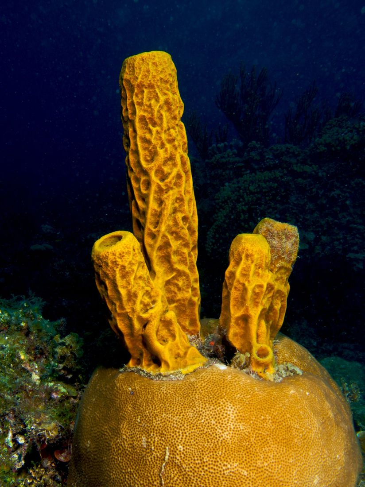
.jpg){kind=link}
最早分出來的動物，是海綿還是櫛水母？
原文說海綿是最早的動物「之一」，這個措辭是安全的。在動物的演化樹上，最先分出去的究竟是海綿還是櫛水母（靠一排排纖毛划水游泳的膠質動物），已經爭論了十幾年。2023 年一項研究比較染色體上基因的排列順序，支持櫛水母最先分出 Schultz 2023；也有不少研究支持海綿 Simion 2017；Redmond 2021。2025 年一篇支持海綿的《Science》論文，已在 2026 年 2 月撤稿 Steenwyk 2025；撤稿聲明 2026。無論哪一邊是對的，海綿都屬於最早分出的幾支動物之一。
海綿的起源時間也有新說法：一項 2026 年的研究推算海綿起源於埃迪卡拉紀早期，而且最早的海綿沒有礦化骨架，骨針是在不同類群中各自演化出來的 Rossi 2026。化石方面，有一種約 5.51–5.39 億年前、高超過 40 公分、骨架是有機質的海綿 Helicolocellus Wang 2024；一個約 8.9 億年的「可能是海綿」的微構造還沒有被確認 Turner 2021。
「指揮家基因」與造礁
原文說，負責指揮身體組裝的基因，在最早的動物身上已經部分存在。這大致正確：海綿的基因組裡已經有大量發育用的「工具箱」基因 Srivastava 2010。但最有名的那一組指揮家，也就是決定身體前後順序的 Hox 基因，海綿並沒有 Larroux 2007；Hox 基因是在刺胞動物和兩側對稱動物這一支才出現的。
- 「海綿靠硬骨架成為地球上第一個造礁者」→ 錯誤。微生物早在 34.3 億年前就在蓋礁 Allwood 2006；約 5.48 億年前的 Cloudina 礁常被視為最早的動物礁 Penny 2014（也有研究認為那只是被搬運堆積的殘骸 Mehra & Maloof 2018）；海綿（古杯類）要到寒武紀早期才成為主要的動物造礁者 Lee & Riding 2018（§9 圖 H）。
- 「DNA 證據顯示動物約 8 億年前出現」→ 估計值在 8.3 億到 5.9 億年前之間來回擺盪，沒有共識 dos Reis 2015；Carlisle 2024；Lole Durbin 2026。
- 「岩石中保存了約 7 億年前的海綿分子」→ 年代大致可以（約 7.13–6.35 億年前），但這些分子是否真的來自海綿仍有爭議 Love 2009；Bobrovskiy 2020；Shawar 2025。
§7埃迪卡拉生物群：第一批肉眼看得見的複雜生物
對應原文〈Ediacaran Biota〉：約 5.8 億年前的海底生物、和現代動物的關係、末期的氧氣、Dickinsonia 的足跡
埃迪卡拉紀（約 6.35–5.388 億年前）的海底，出現了第一批肉眼可見的複雜生物（下面四張照片是代表）。年代上，加拿大紐芬蘭 Mistaken Point 的化石約 5.74 億年，是目前最古老的大型複雜化石 Matthews 2021，時間就在 Gaskiers 冰期結束後不久 Pu 2016。這些生物依時間分成三個組合：Avalon（約 5.75–5.6 億年）、White Sea（約 5.6–5.5 億年）、Nama（約 5.5–5.39 億年）Evans 2022。
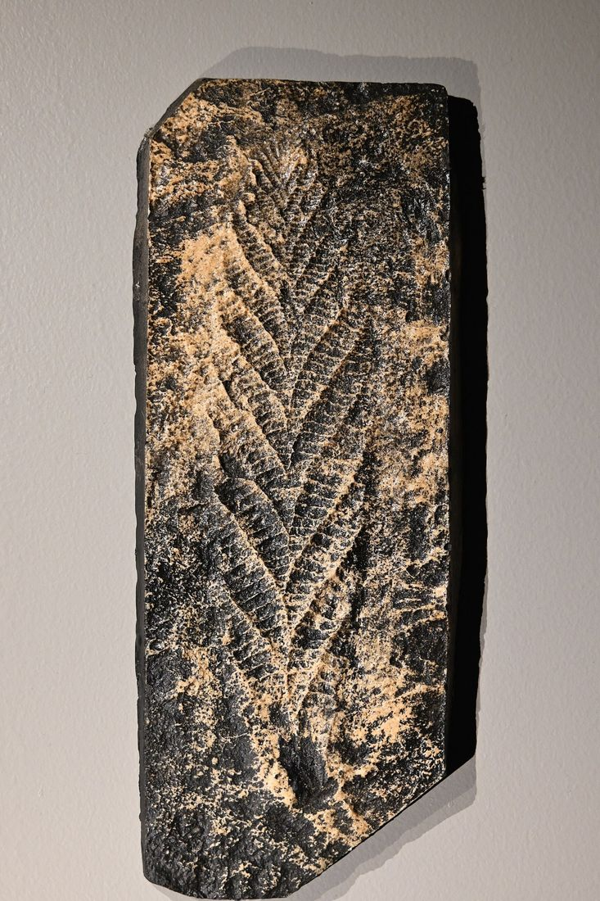

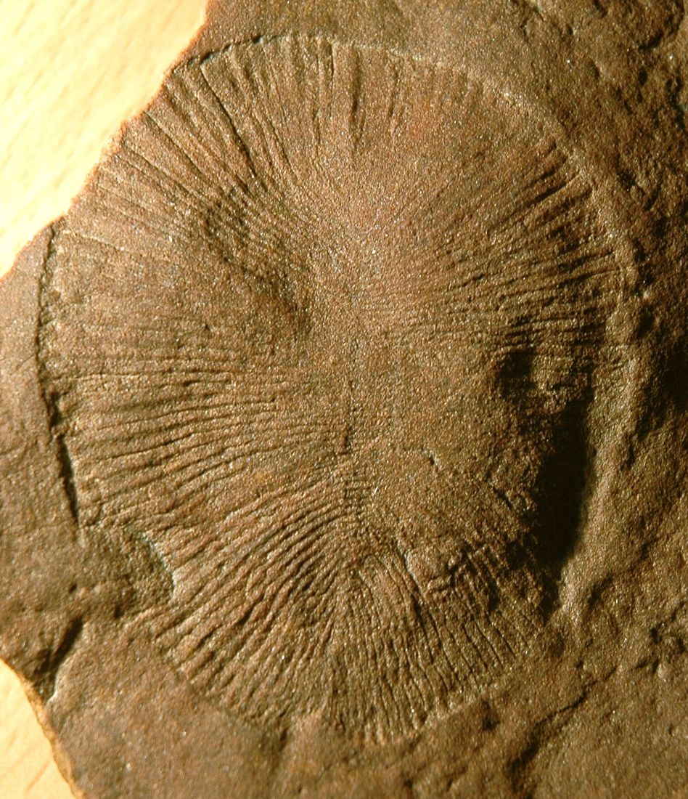
_(Ediacara_Member,_Rawnsley_Quartzite,_near-uppermost_Neoproterozoic;_Flinders_Ranges,_South_Australia)_1_(15018192227).jpg){kind=link}
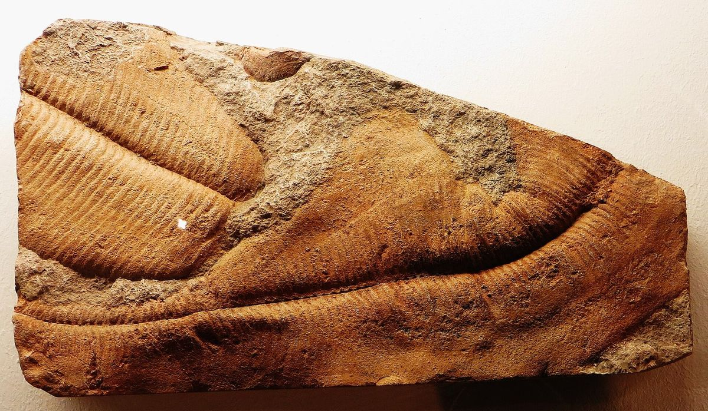

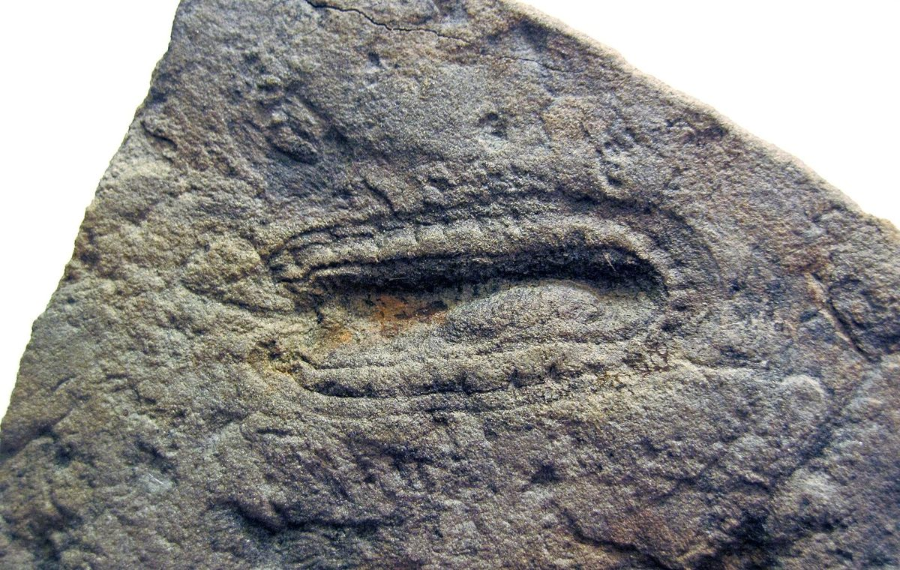
_in_sandstone_(Ust-Pinega_Formation,_Ediacaran,_Neoproterozoic;_White_Sea,_Russia)_(29830060340).jpg){kind=link}
牠們是動物嗎？
原文說，大多數埃迪卡拉生物的身體構造不像任何現代類群。這點仍成立；而且有些埃迪卡拉生物可能根本不是動物。但過去十年，越來越多化石被確認或歸入動物：
- Dickinsonia 化石上保存了膽固醇類的分子，確認牠是動物 Bobrovskiy 2018。俄羅斯白海和南澳都找到牠成串的進食痕跡：牠會在海床上移動，吃掉微生物席 Ivantsov 2011；Evans 2019。
- 約 5.62–5.57 億年的 Auroralumina 是刺胞動物（水母、珊瑚那一群）Dunn 2022；Ikaria 是有前後之分的早期兩側對稱動物 Evans 2020。
- 2026 年報導的中國江川生物群（約 5.54–5.39 億年），同時保存了埃迪卡拉型的生物和目前最古老的後口動物：屬於步帶動物的幹群，也就是海星、柱頭蟲那一支（後口動物也包括我們脊索動物）Li 2026。
末期的氧氣，和海綿的貢獻
原文說埃迪卡拉紀末氧氣上升，接近足以支撐需氧生物的程度。這點有爭議：統計海洋沉積物中鐵的化學形態，看不出埃迪卡拉紀到寒武紀之間的海洋含氧量有明顯變化 Sperling 2015；同位素推算則顯示這段時間的大氣氧氣在今日的 1% 到 50% 之間劇烈擺盪 Krause 2022。原文另外提到「海綿吃掉細菌、讓細菌不被分解，可能因此提高了氧氣」，這來自一個模型推論 Lenton 2014：濾食動物把有機物從水中移走，深海的耗氧就減少了。這個想法很有意思，但目前還沒有直接證據。
- 「埃迪卡拉生物和海綿一起生活了 8,000 萬年」→ 明顯高估。大型埃迪卡拉生物群只存在約 3,500–4,100 萬年；連少數延續到寒武紀的倖存者（如澄江約 5.18 億年的 Stromatoveris Hoyal Cuthill & Han 2018）都算進去，也只有約 5,600–6,200 萬年（本站計算）。而且埃迪卡拉紀的海綿化石很少，多數出現在這段時期的晚期 Wang 2024。
- 「埃迪卡拉紀末，氧氣上升到接近足以支撐需氧生物」→ 證據互相矛盾，仍有爭議 Sperling 2015；Krause 2022。
§8第一次動物大滅絕？埃迪卡拉生物的消失
對應原文〈The End-Ediacaran Extinction〉：約 5.41 億年前的消失、潛穴的蠕蟲、環境工程師
其實可能有兩波
原文說大多數埃迪卡拉生物約在 5.41 億年前消失。這個年代已經更新：納米比亞地層的高精度定年，把埃迪卡拉紀和寒武紀的界線定在 5.388 億年前左右；從最後一批埃迪卡拉生物，到第一批複雜潛穴痕跡出現，中間不到 41 萬年 Linnemann 2019。
更早還有一波：約 5.5 億年前，從 White Sea 組合過渡到 Nama 組合時，約 80% 的屬消失了，規模可以和顯生宙的大滅絕相比 Evans 2022。有研究者因此稱它為「第一次動物大滅絕」。
誰殺了埃迪卡拉生物？
原文保留地說，身體構造的演化、攝食關係和環境改造都可能有影響。這個保留是恰當的，因為兩派解釋都有證據：
- 生物取代：新出現的動物改變了海底環境，搶走了舊生物的生存空間。納米比亞一處化石點的多樣性特別低，支持這種看法 Darroch 2015。
- 環境變化：分析全球資料庫後，第一波消失的模式比較符合缺氧等環境因素 Evans 2022；鈾同位素也顯示埃迪卡拉紀末，缺氧海水擴張到超過 21% 的海床 Zhang 2018。
Treptichnus pedum：用來定義寒武紀的潛穴
寒武紀的起點，是用一種生痕化石來定義的：Treptichnus pedum，動物在沉積物裡反覆探索留下的一串串潛穴。有趣的是，在加拿大的界線剖面裡，它在界線下方 4 公尺就已經出現 Gehling 2001，可見挖洞的動物在埃迪卡拉紀末就開始活動。挖出這種痕跡的，可能是類似鰓曳動物的蠕蟲 Vannier 2010。
原文把這些挖洞者稱為「環境工程師」，認為牠們擾動、或許也讓沉積物通氣，可能因此促成物種更替。常見的說法是：潛穴動物翻動了原本被微生物席覆蓋的海床，依賴微生物席生活的埃迪卡拉生物因此失去棲地，這個轉變有時被稱為「農業革命」。但要注意兩點：當時的潛穴都很淺、多半是水平的，沉積物被大規模翻攪要等到約 1.2 億年後的晚志留紀 Tarhan 2015；而模型顯示，生物擾動反而可能降低全球的氧氣 Boyle 2014；van de Velde 2018。所以「通氣」只在局部、孔隙水的尺度上說得通。
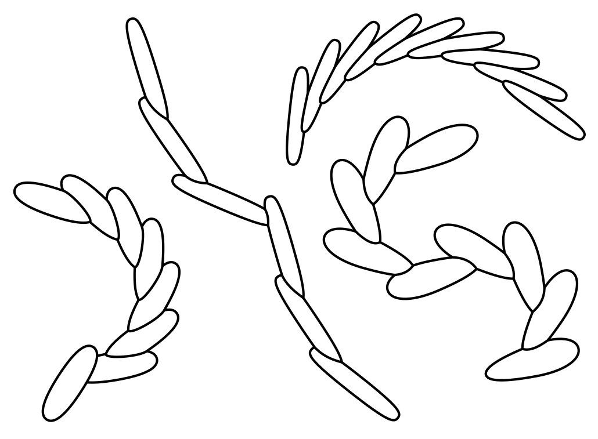

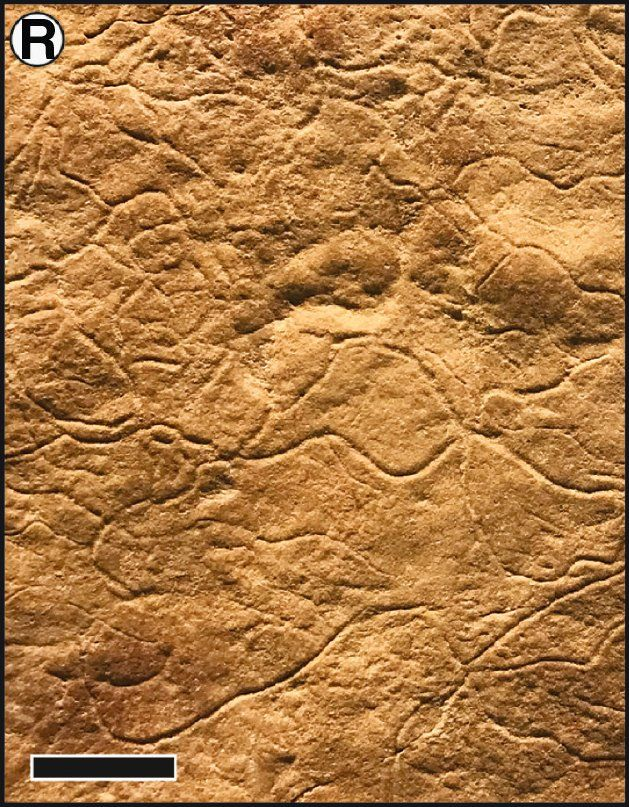

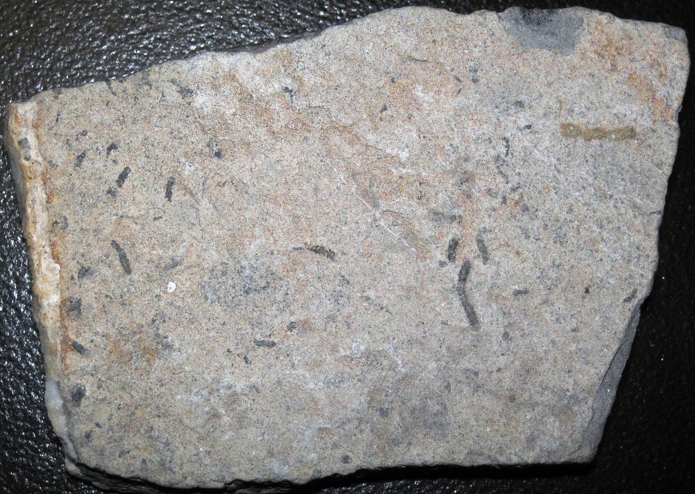
_(45453979394).jpg){kind=link}
§9寒武紀大爆發
對應原文〈The Cambrian Explosion〉前半：硬殼與棘刺、頭尾分明的活躍動物、三葉蟲、礁的更替
寒武紀的現行年代是 5.388 億到 4.8685 億年前，長約 5,200 萬年（國際地層委員會 2026 年版年代表；原文仍用舊的 5.41–4.85 億年）。各種新動物在這段時間內大量出現，但「爆發」主要集中在前 2,000 萬年左右：三葉蟲化石的定年顯示，到約 5.21 億年前，這波多樣化已經大致完成 Paterson 2019。也有人認為，它只是從約 5.71 億年前就開始的一連串演化輻射（短時間內分化出許多新類群）中的一次 Wood 2019。
寒武紀新出現了什麼
- 大量的礦化骨骼：殼、棘刺、外骨骼。不過最早的礦化骨骼在埃迪卡拉紀末就有了（Cloudina，§8）。原文說「硬質部位讓動物更能挖洞」，這點有爭議：最早的挖洞者是身體柔軟的蠕蟲 Vannier 2010；掠食壓力是骨骼出現的主要假說之一 Bengtson 1992，另外也有海水化學、氧氣等解釋。
- 大型、快速的掠食者：有前後之分的兩側對稱動物在埃迪卡拉紀就有了 Evans 2020，寒武紀新增的是像奇蝦這樣體型大、游得快的獵手（§10）。
- 現代式的食物網：寒武紀澄江和伯吉斯頁岩的食物網，結構已經和現代海洋的食物網相似 Dunne 2008。連奇蝦這一類動物內部都有分工：有的抓身體柔軟的獵物，有的篩濾沉積物 Moysiuk 2019；Bicknell 2023。
原文說三葉蟲這類重裝甲動物的取食，可能進一步擾動了埃迪卡拉生物曾經生活的海床。時間上可以再精確一點：三葉蟲約 5.21 億年前才出現，比典型的埃迪卡拉生物群消失晚了約 1,800 萬年（本站計算）；兩者大致不重疊，只有少數延續到寒武紀的埃迪卡拉型生物（如澄江的 Stromatoveris）和三葉蟲同時存在 Hoyal Cuthill & Han 2018。
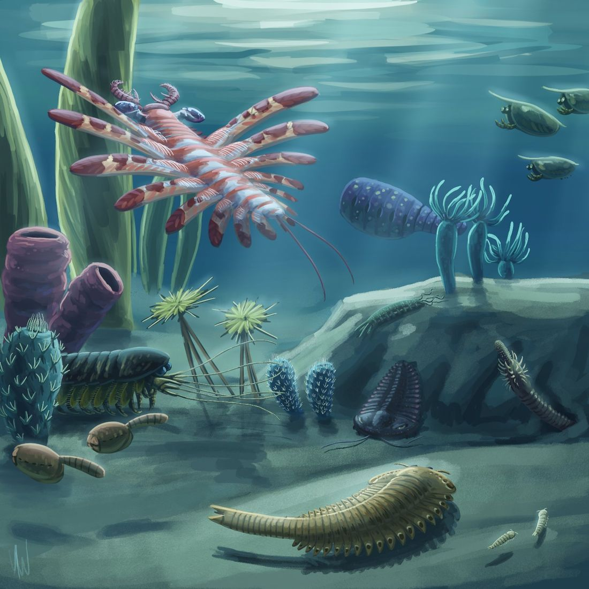
.png){kind=link}
誰在蓋礁？
原文說，造疊層石礁的細菌衰退之後，換成腕足動物蓋的礁。查證後這是錯的。整理早古生代礁的研究顯示 Lee & Riding 2018：從埃迪卡拉紀到奧陶紀早期，微生物碳酸鹽一直是礁的主體，和它搭檔的動物依序是 Cloudina、Ladatheca、古杯類海綿、石海綿、Calathium；到了奧陶紀中期，層孔蟲、苔蘚動物和床板珊瑚蓋的骨骼礁才取代微生物礁。在這整個序列裡，腕足動物都不是主要的造礁者（以腕足動物為框架的礁，是二疊紀等少數時期的特例）。原文可能把苔蘚動物（bryozoans）和腕足動物（brachiopods）弄混了，但這只是我們的推測。原文說今日的造礁主角石珊瑚要再過約兩億年才出現，這點正確：石珊瑚化石約在 2.4 億年前出現 Stolarski 2011。
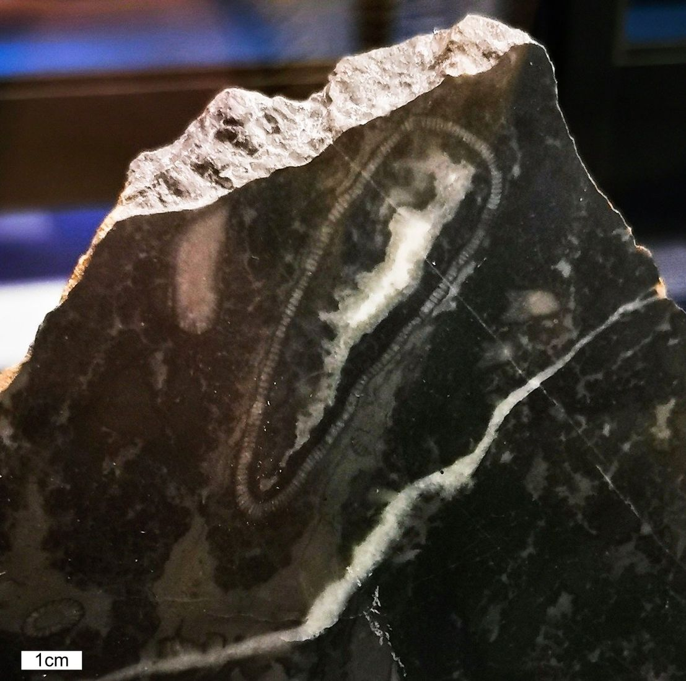
.jpg){kind=link}
§10伯吉斯頁岩圖鑑
對應原文〈The Cambrian Explosion〉後半：Walcott 的發現，以及 Waptia、鰓曳動物、Wiwaxia、奇蝦、五眼的 Opabinia
1909 年 8 月底，Smithsonian 第四任秘書長 Charles Doolittle Walcott（任期 1907–1927）在加拿大洛磯山脈發現了伯吉斯頁岩。這裡的化石約 5.08–5.05 億年，連身體柔軟、沒有硬殼的動物都保存了下來，讓人第一次看見寒武紀動物的全貌 Caron & Vannier 2016；Vannier 2012。比它更早、同樣豐富的還有中國的澄江和清江生物群（約 5.18 億年）Fu 2019。下面的化石照片，都是 Smithsonian 國家自然史博物館的館藏標本，以 CC0 公開釋出。
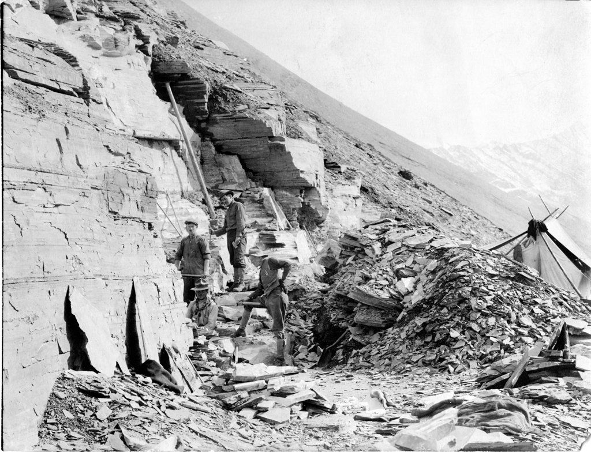

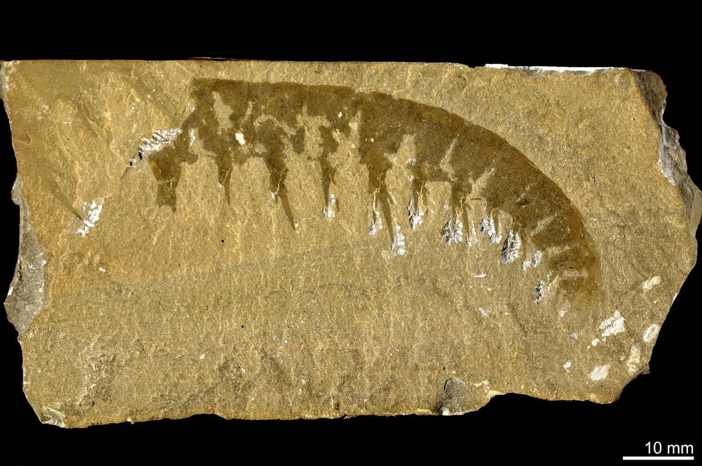
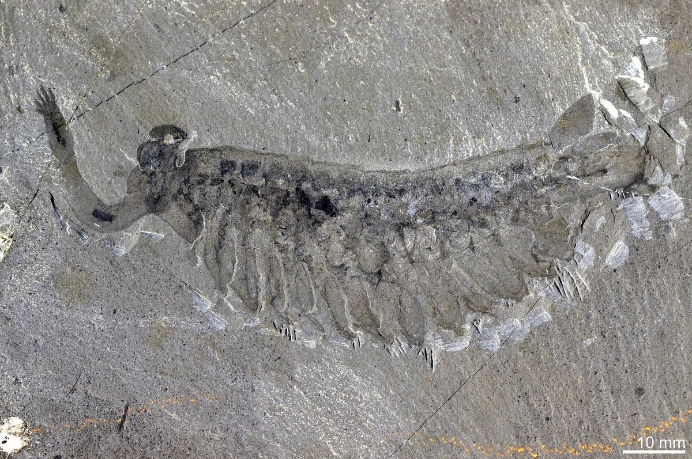
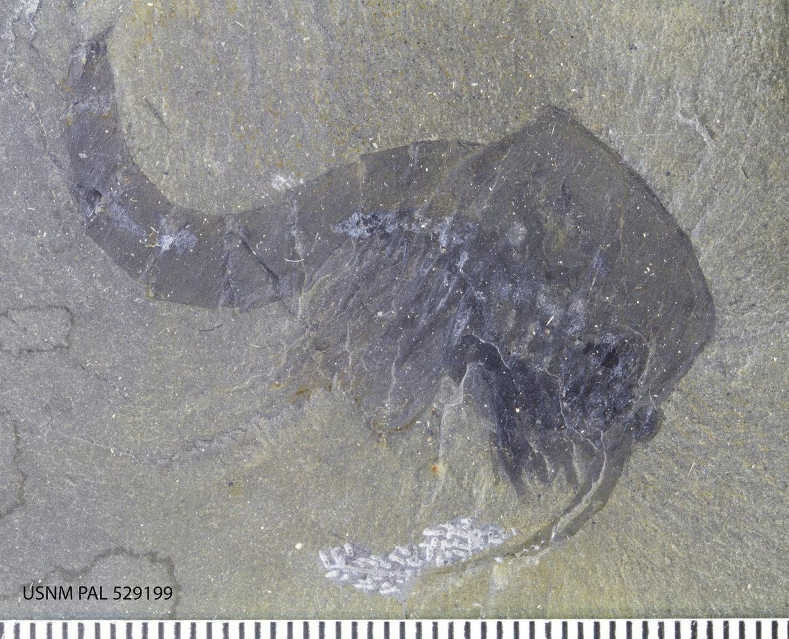
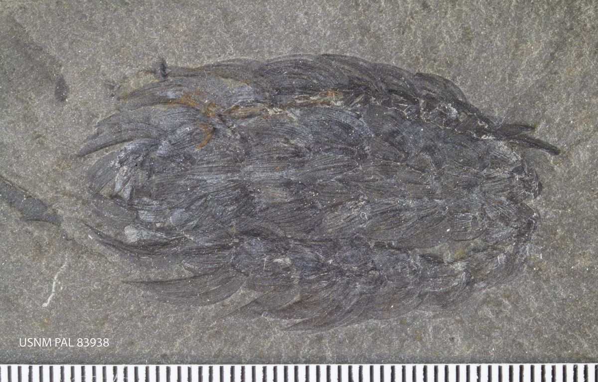
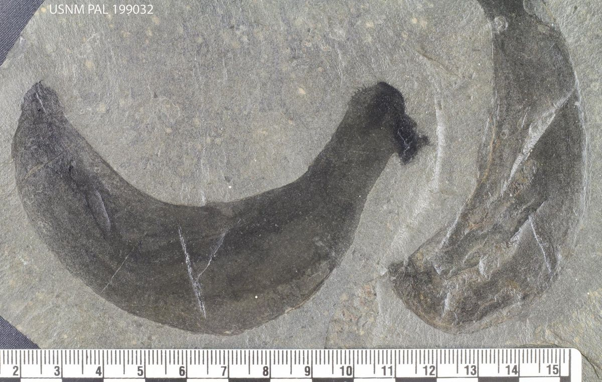
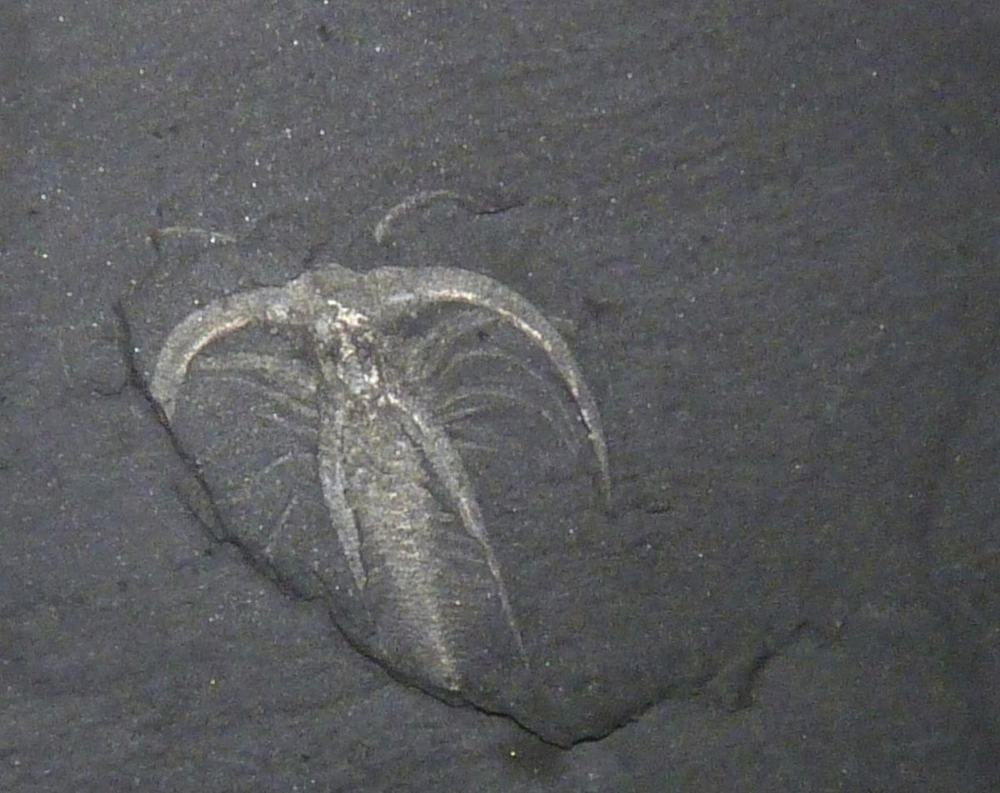
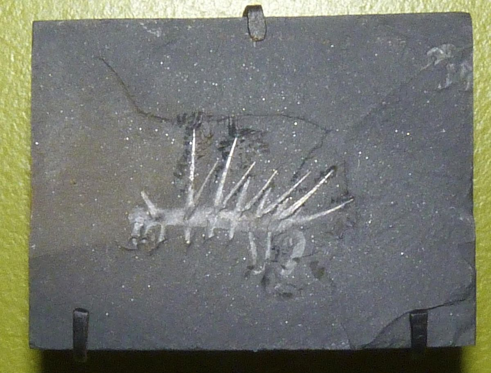
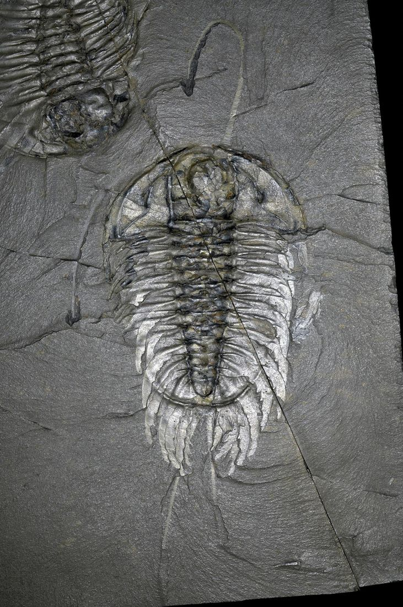
寒武紀結束時，動物的「門」都到齊了嗎？
原文說，寒武紀結束時，幾乎所有現存的動物門（軟體動物、節肢動物、環節動物等）都已出現。這大致成立，但有兩點補充。第一，苔蘚動物還沒有無爭議的寒武紀化石：2021 年曾有人把寒武紀的 Protomelission 解讀為苔蘚動物 Zhang 2021，2023 年又被重新解讀為綠藻 Yang 2023。第二，許多寒武紀化石其實是各門的早期旁支（幹群），像奇蝦、Opabinia 都是節肢動物家族樹上比現生類群更早分出的分支；各門現代成員的完整身體構造，多半是之後才組裝完成的 Budd & Jensen 2000。
§11原文對照：哪些地方要更新
原文寫給國高中生，簡化是必要的；這裡只列查證後需要修正或補充的主張（原文說法為改寫，不是引文）
| 原文說法（改寫） | 判定 | 目前的理解 | 見 |
|---|---|---|---|
| 藍綠菌是最早的光合生物 | 錯誤 | 是最早的產氧光合生物；不產氧光合作用約 34 億年前就有 | §3 |
| 海綿是地球上第一個造礁者 | 錯誤 | 微生物礁 34.3 億年前就有；常被視為最早動物礁的 Cloudina（約 5.48 億年）也早於海綿礁 | §6、§9 |
| 埃迪卡拉生物和海綿共存 8,000 萬年 | 高估 | 大型埃迪卡拉生物群約 3,500–4,100 萬年；連寒武紀倖存者也只有約 5,600–6,200 萬年（本站計算） | §7 |
| Wiwaxia 附著在海綿上 | 錯誤 | 在海床上爬行刮食；附著在海綿上的是腕足動物 | §10 |
| 疊層石礁衰退後換成腕足動物造礁 | 錯誤 | 依序是古杯類、石海綿、層孔蟲／苔蘚動物／床板珊瑚；腕足動物不是主要造礁者 | §9 |
| 大氧化事件記錄在條帶狀鐵礦層的變化裡 | 不完整 | BIF 的衰退是線索之一，但大部分 BIF 早於大氧化事件，記錄的是缺氧富鐵的海洋；主要證據是硫同位素訊號消失 | §3 |
| 埃迪卡拉生物約 5.41 億年前消失 | 過時 | 5.388 億年前；更早約 5.5 億年前還有一波 | §8 |
| 寒武紀是 5.41–4.85 億年前 | 過時 | 5.388–4.8685 億年前 | §9 |
| 氧氣在低檔維持約二十億年 | 簡化 | 從大氧化事件算到新元古代約 16–19 億年，量級沒錯；但中間有超量與崩落 | §3 |
| DNA 證據顯示動物約 8 億年前出現 | 有爭議 | 分子鐘估計在 8.3–5.9 億年前之間，取決於化石校正點 | §6 |
| 岩石中有約 7 億年前的海綿分子 | 有爭議 | 年代大致可以（約 7.13–6.35 億年前）；是否來自海綿，正反研究都有 | §6 |
| 埃迪卡拉紀末氧氣上升到接近足以支撐需氧生物 | 有爭議 | 鐵化學形態看不出明顯變化；同位素顯示劇烈震盪 | §7 |
| 海綿吃細菌，可能因此提高了氧氣 | 有爭議 | 模型推論的假說，還沒有直接證據 | §7 |
| 潛穴或許讓沉積物通氣，可能促成物種更替 | 有爭議 | 早期潛穴淺；大規模翻攪要到晚志留紀，生物擾動甚至可能降低全球氧氣 | §8 |
| Waptia 在海底搜尋食物 | 簡化 | 會游泳的掠食者，捕捉身體柔軟的獵物 | §10 |
| 三葉蟲可能進一步擾動了埃迪卡拉生物曾住的海床 | 補充時序 | 三葉蟲比典型埃迪卡拉生物群晚約 1,800 萬年出現，兩者大致不重疊 | §9 |
其餘主張（疊層石的形成與年代、氧氣對厭氧微生物的影響、內共生、海綿的低氧耐受與濾食、Walcott 與伯吉斯頁岩、五眼的 Opabinia、石珊瑚的出現時間等）查證後正確或屬於可接受的簡化。原文提到的兩位 Smithsonian 研究者，我們沒有查證他們目前的研究狀態，所以這頁沒有提及。
§12原文沒寫到的新發現（2018–2026）
本站補充：查證過程中找到、值得知道的近年進展
- 共同祖先 LUCA 約 42 億年前：分子鐘推算，而且它可能已有早期的免疫系統 Moody 2024。
- 大氧化事件震盪了兩億年：從 24.3 億年前到 22.2 億年前才永久氧化 Poulton 2021。
- 最古老的類囊體化石：17.8–17.3 億年，是產氧光合作用的直接細胞證據 Demoulin 2024。
- 培養出活的 Asgard 古菌：真核生物祖先的近親，已有肌動蛋白骨架 Imachi 2020；Rodrigues-Oliveira 2023；真核生物和其中的 Hodarchaeales 最接近 Eme 2023。
- 「晚粒線體」：細胞核等複雜構造可能比粒線體更早出現 Kay 2026（仍有爭議）。
- 實驗室裡的多細胞演化：雪花酵母長到肉眼可見 Bozdag 2023；動物近親有類似胚胎的發育過程 Olivetta 2024。
- 動物起源年代來回擺盪：6.1–5.9 億年 Carlisle 2024 對上 8–7 億年 Lole Durbin 2026。
- 最早分出的動物仍未定案：櫛水母 Schultz 2023 還是海綿？2025 年一篇支持海綿的論文已撤稿 撤稿聲明 2026。
- 確認或新報導的埃迪卡拉動物越來越多：Dickinsonia Bobrovskiy 2018、刺胞動物 Auroralumina Dunn 2022、兩側對稱的 Ikaria Evans 2020、2026 年新報導的江川生物群後口動物 Li 2026。
- 「第一次動物大滅絕」：約 5.5 億年前約 80% 的屬消失 Evans 2022。
- 奇蝦的新形象：附肢適合抓身體柔軟的獵物，咬不碎三葉蟲 Bicknell 2023；伯吉斯頁岩還發現了三隻眼的放射齒類 Mosura Moysiuk 2025。
§13中英名詞對照
對照英文原文閱讀時用得到的詞，依出現順序排列
- microbe / microbial mat
- 微生物／微生物席：一層層黏在一起生活的微生物群落
- stromatolite
- 疊層石：微生物席捕捉沉積物、沉澱礦物，一層層疊成的岩石構造
- LUCA
- 所有現存生物的最後共同祖先（last universal common ancestor）
- cyanobacteria
- 藍綠菌（舊稱藍綠藻，但它是細菌）
- oxygenic / anoxygenic photosynthesis
- 產氧／不產氧光合作用
- Great Oxidation Event (GOE)
- 大氧化事件：約 24.3–22.2 億年前，大氣開始累積氧氣
- Ma
- 百萬年前（mega-annum）；538.8 Ma 就是 5.388 億年前
- PAL
- present atmospheric level，今日的大氣含量；本頁寫的「今日的 1%」就是 1% PAL
- whiffs of oxygen
- 「一絲氧氣」：大氧化事件之前短暫、局部的含氧跡象
- primary productivity
- 初級生產力：光合生物等生產的有機物總量
- S-MIF
- 硫同位素的非質量分餾，只有在大氣幾乎無氧時才會保存下來
- Banded Iron Formation (BIF)
- 條帶狀鐵礦層：富鐵層與燧石層交替的沉積岩
- prokaryote / eukaryote
- 原核生物（細菌、古菌）／真核生物（有細胞核）
- organelle / mitochondrion / nucleus
- 胞器／粒線體／細胞核
- endosymbiosis
- 內共生：一個生物住進另一個生物的細胞裡
- Asgard archaea
- Asgard 古菌：真核生物宿主的近親
- LECA
- 真核生物的最後共同祖先（last eukaryotic common ancestor）
- choanoflagellate / choanocyte
- 領鞭毛蟲（動物的單細胞近親）／領細胞（海綿的濾食細胞）
- molecular clock
- 分子鐘：用 DNA 差異和化石校正推算分家時間
- biomarker
- 生物標記（本頁也稱「海綿分子」等）：岩石中能指向特定生物的有機分子
- sponge (Porifera) / ctenophore
- 海綿（海綿動物門）／櫛水母
- body plan
- 身體構造（藍圖）
- Hox genes
- Hox 基因：決定身體前後各部位的一組調控基因
- Ediacaran biota
- 埃迪卡拉生物群（約 5.75–5.39 億年前）
- rangeomorph
- 蘭吉蟲類：葉狀、分形分枝的埃迪卡拉生物，如 Charnia
- trace fossil / burrow
- 生痕化石／潛穴：保存的是生物的行為痕跡，而非身體
- bioturbation
- 生物擾動：動物翻攪沉積物
- agronomic revolution
- 「農業革命」：寒武紀初潛穴動物翻動微生物席海床的轉變
- Cambrian explosion
- 寒武紀大爆發
- evolutionary radiation
- 演化輻射：短時間內從一個祖先分化出許多新類群
- phylum (pl. phyla)
- 門：動物分類中僅次於「界」的大類，如節肢動物門
- stem group / crown group
- 幹群（現生類群之前分出的早期旁支）／冠群（現生成員及其共同祖先的所有後代）
- Burgess Shale
- 伯吉斯頁岩：加拿大的寒武紀化石產地
- radiodont
- 放射齒類：奇蝦所屬的類群
- priapulid worm
- 鰓曳動物：住在泥中的蠕蟲
- lobopodian
- 葉足動物：有肉質腳的蠕蟲狀動物，如怪誕蟲
- trilobite
- 三葉蟲
- archaeocyath / lithistid sponge
- 古杯類／石海綿：寒武紀的造礁海綿
- brachiopod / bryozoan
- 腕足動物／苔蘚動物（原文可能把兩者混淆）
- scleractinian (hard) coral
- 石珊瑚：今日珊瑚礁的主要建造者
§14參考文獻與圖片來源
121 篇文獻的 DOI 都經 Crossref 核對；關鍵結論另外對過摘要或全文。26 張照片的授權都在原始檔案頁上確認過
怎麼查的。原文約 65 條主張逐條對照文獻，判定分成正確、可接受的簡化、過時、有爭議、錯誤五級。地質年代用國際地層委員會（ICS）2026 年 6 月版的年代表。圖 A、C、E、G、H 中的時刻、時長與換算（例如 24 小時制、共存時間、空氣中的氧氣比例）由本站的腳本計算。
參考文獻（121 篇）
- Allwood 2006. Stromatolite reef from the Early Archaean era of Australia. Nature. doi:10.1038/nature04764
- Allwood 2018. Reassessing evidence of life in 3,700-million-year-old rocks of Greenland. Nature. doi:10.1038/s41586-018-0610-4
- Anbar 2007. A Whiff of Oxygen Before the Great Oxidation Event?. Science. doi:10.1126/science.1140325
- Anbar 2023. Technical comment on “Reexamination of 2.5-Ga ‘whiff’ of oxygen interval points to anoxic ocean before GOE”. Science Advances. doi:10.1126/sciadv.abq3736
- Bekker 2010. Iron Formation: The Sedimentary Product of a Complex Interplay among Mantle, Tectonic, Oceanic, and Biospheric Processes. Economic Geology. doi:10.2113/gsecongeo.105.3.467
- Bell 2015. Potentially biogenic carbon preserved in a 4.1 billion-year-old zircon. Proceedings of the National Academy of Sciences. doi:10.1073/pnas.1517557112
- Bengtson 1992. Predatorial Borings in Late Precambrian Mineralized Exoskeletons. Science. doi:10.1126/science.257.5068.367
- Bicknell 2023. Raptorial appendages of the Cambrian apex predator Anomalocaris canadensis are built for soft prey and speed. Proceedings of the Royal Society B: Biological Sciences. doi:10.1098/rspb.2023.0638
- Bobrovskiy 2018. Ancient steroids establish the Ediacaran fossil Dickinsonia as one of the earliest animals. Science. doi:10.1126/science.aat7228
- Bobrovskiy 2020. Algal origin of sponge sterane biomarkers negates the oldest evidence for animals in the rock record. Nature Ecology & Evolution. doi:10.1038/s41559-020-01334-7
- Boden 2021. Timing the evolution of antioxidant enzymes in cyanobacteria. Nature Communications. doi:10.1038/s41467-021-24396-y
- Boyle 2014. Stabilization of the coupled oxygen and phosphorus cycles by the evolution of bioturbation. Nature Geoscience. doi:10.1038/ngeo2213
- Bozdag 2023. De novo evolution of macroscopic multicellularity. Nature. doi:10.1038/s41586-023-06052-1
- Brocks 2023. Lost world of complex life and the late rise of the eukaryotic crown. Nature. doi:10.1038/s41586-023-06170-w
- Brunet 2017. The Origin of Animal Multicellularity and Cell Differentiation. Developmental Cell. doi:10.1016/j.devcel.2017.09.016
- Budd 2000. A critical reappraisal of the fossil record of the bilaterian phyla. Biological Reviews. doi:10.1111/j.1469-185X.1999.tb00046.x
- Budd 2012. The lobes and lobopods of Opabinia regalis from the middle Cambrian Burgess Shale. Lethaia. doi:10.1111/j.1502-3931.2011.00264.x
- Canfield 2013. Oxygen dynamics in the aftermath of the Great Oxidation of Earth’s atmosphere. Proceedings of the National Academy of Sciences. doi:10.1073/pnas.1315570110
- Carlisle 2024. Ediacaran origin and Ediacaran-Cambrian diversification of Metazoa. Science Advances. doi:10.1126/sciadv.adp7161
- Caron 2016. Waptia and the Diversification of Brood Care in Early Arthropods. Current Biology. doi:10.1016/j.cub.2015.11.006
- Catling 2020. The Archean atmosphere. Science Advances. doi:10.1126/sciadv.aax1420
- Conway Morris 1985. The Middle Cambrian metazoan Wiwaxia corrugata (Matthew) from the Burgess Shale and Ogygopsis Shale, British Columbia, Canada. Philosophical Transactions of the Royal Society of London. B, Biological Sciences. doi:10.1098/rstb.1985.0005
- Cox 2013. Neoproterozoic iron formation: An evaluation of its temporal, environmental and tectonic significance. Chemical Geology. doi:10.1016/j.chemgeo.2013.08.002
- Crowe 2013. Atmospheric oxygenation three billion years ago. Nature. doi:10.1038/nature12426
- Daley 2014. Morphology of Anomalocaris canadensis from the Burgess Shale. Journal of Paleontology. doi:10.1666/13-067
- Darroch 2015. Biotic replacement and mass extinction of the Ediacara biota. Proceedings of the Royal Society B: Biological Sciences. doi:10.1098/rspb.2015.1003
- Demoulin 2024. Oldest thylakoids in fossil cells directly evidence oxygenic photosynthesis. Nature. doi:10.1038/s41586-023-06896-7
- Djokic 2017. Earliest signs of life on land preserved in ca. 3.5 Ga hot spring deposits. Nature Communications. doi:10.1038/ncomms15263
- Dodd 2017. Evidence for early life in Earth’s oldest hydrothermal vent precipitates. Nature. doi:10.1038/nature21377
- dos Reis 2015. Uncertainty in the Timing of Origin of Animals and the Limits of Precision in Molecular Timescales. Current Biology. doi:10.1016/j.cub.2015.09.066
- Dunn 2021. The developmental biology of Charnia and the eumetazoan affinity of the Ediacaran rangeomorphs. Science Advances. doi:10.1126/sciadv.abe0291
- Dunn 2022. A crown-group cnidarian from the Ediacaran of Charnwood Forest, UK. Nature Ecology & Evolution. doi:10.1038/s41559-022-01807-x
- Dunne 2008. Compilation and Network Analyses of Cambrian Food Webs. PLoS Biology. doi:10.1371/journal.pbio.0060102
- Eme 2023. Inference and reconstruction of the heimdallarchaeial ancestry of eukaryotes. Nature. doi:10.1038/s41586-023-06186-2
- Evans 2019. Slime travelers: Early evidence of animal mobility and feeding in an organic mat world. Geobiology. doi:10.1111/gbi.12351
- Evans 2020. Discovery of the oldest bilaterian from the Ediacaran of South Australia. Proceedings of the National Academy of Sciences. doi:10.1073/pnas.2001045117
- Evans 2022. Environmental drivers of the first major animal extinction across the Ediacaran White Sea-Nama transition. Proceedings of the National Academy of Sciences. doi:10.1073/pnas.2207475119
- Farquhar 2000. Atmospheric Influence of Earth's Earliest Sulfur Cycle. Science. doi:10.1126/science.289.5480.756
- Fournier 2021. The Archean origin of oxygenic photosynthesis and extant cyanobacterial lineages. Proceedings of the Royal Society B: Biological Sciences. doi:10.1098/rspb.2021.0675
- Fu 2019. The Qingjiang biota—A Burgess Shale–type fossil Lagerstätte from the early Cambrian of South China. Science. doi:10.1126/science.aau8800
- Gehling 2001. Burrowing below the basal Cambrian GSSP, Fortune Head, Newfoundland. Geological Magazine. doi:10.1017/S001675680100509X
- Gehling 2014. Scratch Traces of Large Ediacara Bilaterian Animals. Journal of Paleontology. doi:10.1666/13-054
- Grosberg 2007. The Evolution of Multicellularity: A Minor Major Transition?. Annual Review of Ecology, Evolution, and Systematics. doi:10.1146/annurev.ecolsys.36.102403.114735
- Grotzinger 1996. An abiotic model for stromatolite morphogenesis. Nature. doi:10.1038/383423a0
- Gumsley 2017. Timing and tempo of the Great Oxidation Event. Proceedings of the National Academy of Sciences. doi:10.1073/pnas.1608824114
- H. Koschwanez 2011. Sucrose Utilization in Budding Yeast as a Model for the Origin of Undifferentiated Multicellularity. PLoS Biology. doi:10.1371/journal.pbio.1001122
- Herron 2019. De novo origins of multicellularity in response to predation. Scientific Reports. doi:10.1038/s41598-019-39558-8
- Hodgskiss 2019. A productivity collapse to end Earth’s Great Oxidation. Proceedings of the National Academy of Sciences. doi:10.1073/pnas.1900325116
- Hoyal Cuthill 2018. Cambrian petalonamid Stromatoveris phylogenetically links Ediacaran biota to later animals. Palaeontology. doi:10.1111/pala.12393
- Imachi 2020. Isolation of an archaeon at the prokaryote–eukaryote interface. Nature. doi:10.1038/s41586-019-1916-6
- Ivantsov 2011. Feeding traces of proarticulata—the Vendian metazoa. Paleontological Journal. doi:10.1134/S0031030111030063
- Kappler 2005. Deposition of banded iron formations by anoxygenic phototrophic Fe(II)-oxidizing bacteria. Geology. doi:10.1130/G21658.1
- Kay 2026. Dated gene duplications elucidate the evolutionary assembly of eukaryotes. Nature. doi:10.1038/s41586-025-09808-z
- King 2008. The genome of the choanoflagellate Monosiga brevicollis and the origin of metazoans. Nature. doi:10.1038/nature06617
- Krause 2022. Extreme variability in atmospheric oxygen levels in the late Precambrian. Science Advances. doi:10.1126/sciadv.abm8191
- Larroux 2007. The NK Homeobox Gene Cluster Predates the Origin of Hox Genes. Current Biology. doi:10.1016/j.cub.2007.03.008
- Lee 2018. Marine oxygenation, lithistid sponges, and the early history of Paleozoic skeletal reefs. Earth-Science Reviews. doi:10.1016/j.earscirev.2018.04.003
- Lenton 2014. Co-evolution of eukaryotes and ocean oxygenation in the Neoproterozoic era. Nature Geoscience. doi:10.1038/ngeo2108
- Lerosey-Aubril 2012. Quantitative Approach to Diversity and Decline in Late Palaeozoic Trilobites. Earth and Life. doi:10.1007/978-90-481-3428-1_16
- Li 2026. The dawn of the Phanerozoic: A transitional fauna from the late Ediacaran of Southwest China. Science. doi:10.1126/science.adu2291
- Linnemann 2019. New high‐resolution age data from the Ediacaran–Cambrian boundary indicate rapid, ecologically driven onset of the Cambrian explosion. Terra Nova. doi:10.1111/ter.12368
- Lole Durbin 2026. Re-evaluating molecular clock maximum age calibrations revives pre-Ediacaran divergence estimates for animals. Science Advances. doi:10.1126/sciadv.aeg6289
- Love 2009. Fossil steroids record the appearance of Demospongiae during the Cryogenian period. Nature. doi:10.1038/nature07673
- Lu 2018. Late inception of a resiliently oxygenated upper ocean. Science. doi:10.1126/science.aar5372
- Mah 2014. Choanoflagellate and choanocyte collar-flagellar systems and the assumption of homology. Evolution & Development. doi:10.1111/ede.12060
- Matthews 2021. A Chronostratigraphic Framework for the Rise of the Ediacaran Macrobiota: New Constraints from Mistaken Point Ecological Reserve, Newfoundland. GSA Bulletin. doi:10.1130/B35646.1
- Mehra 2018. Multiscale approach reveals that Cloudina aggregates are detritus and not in situ reef constructions. Proceedings of the National Academy of Sciences. doi:10.1073/pnas.1719911115
- Miao 2024. 1.63-billion-year-old multicellular eukaryotes from the Chuanlinggou Formation in North China. Science Advances. doi:10.1126/sciadv.adk3208
- Mills 2014. Oxygen requirements of the earliest animals. Proceedings of the National Academy of Sciences. doi:10.1073/pnas.1400547111
- Moody 2024. The nature of the last universal common ancestor and its impact on the early Earth system. Nature Ecology & Evolution. doi:10.1038/s41559-024-02461-1
- Moysiuk 2019. A new hurdiid radiodont from the Burgess Shale evinces the exploitation of Cambrian infaunal food sources. Proceedings of the Royal Society B: Biological Sciences. doi:10.1098/rspb.2019.1079
- Moysiuk 2025. Early evolvability in arthropod tagmosis exemplified by a new radiodont from the Burgess Shale. Royal Society Open Science. doi:10.1098/rsos.242122
- Nettersheim 2019. Putative sponge biomarkers in unicellular Rhizaria question an early rise of animals. Nature Ecology & Evolution. doi:10.1038/s41559-019-0806-5
- Nutman 2016. Rapid emergence of life shown by discovery of 3,700-million-year-old microbial structures. Nature. doi:10.1038/nature19355
- Ohtomo 2014. Evidence for biogenic graphite in early Archaean Isua metasedimentary rocks. Nature Geoscience. doi:10.1038/ngeo2025
- Olivetta 2024. A multicellular developmental program in a close animal relative. Nature. doi:10.1038/s41586-024-08115-3
- Paterson 2019. Trilobite evolutionary rates constrain the duration of the Cambrian explosion. Proceedings of the National Academy of Sciences. doi:10.1073/pnas.1819366116
- Pavlov 2002. Mass-Independent Fractionation of Sulfur Isotopes in Archean Sediments: Strong Evidence for an Anoxic Archean Atmosphere. Astrobiology. doi:10.1089/153110702753621321
- Penny 2014. Ediacaran metazoan reefs from the Nama Group, Namibia. Science. doi:10.1126/science.1253393
- Peters 2017. The rise and fall of stromatolites in shallow marine environments. Geology. doi:10.1130/G38931.1
- Poulton 2021. A 200-million-year delay in permanent atmospheric oxygenation. Nature. doi:10.1038/s41586-021-03393-7
- Pu 2016. Dodging snowballs: Geochronology of the Gaskiers glaciation and the first appearance of the Ediacaran biota. Geology. doi:10.1130/G38284.1
- Rasmussen 2012. Deposition of 1.88-billion-year-old iron formations as a consequence of rapid crustal growth. Nature. doi:10.1038/nature11021
- Ratcliff 2012. Experimental evolution of multicellularity. Proceedings of the National Academy of Sciences. doi:10.1073/pnas.1115323109
- Redmond 2021. Evidence for sponges as sister to all other animals from partitioned phylogenomics with mixture models and recoding. Nature Communications. doi:10.1038/s41467-021-22074-7
- Rodrigues-Oliveira 2023. Actin cytoskeleton and complex cell architecture in an Asgard archaeon. Nature. doi:10.1038/s41586-022-05550-y
- Roger 2017. The Origin and Diversification of Mitochondria. Current Biology. doi:10.1016/j.cub.2017.09.015
- Rosing 1999. 13 C-Depleted Carbon Microparticles in >3700-Ma Sea-Floor Sedimentary Rocks from West Greenland. Science. doi:10.1126/science.283.5402.674
- Rossi 2026. Independent origins of spicules reconcile paleontological and molecular evidence of sponge evolutionary history. Science Advances. doi:10.1126/sciadv.adx1754
- Schultz 2023. Ancient gene linkages support ctenophores as sister to other animals. Nature. doi:10.1038/s41586-023-05936-6
- Shawar 2025. Chemical characterization of C 31 sterols from sponges and Neoproterozoic fossil sterane counterparts. Proceedings of the National Academy of Sciences. doi:10.1073/pnas.2503009122
- Shih 2017. Crown group Oxyphotobacteria postdate the rise of oxygen. Geobiology. doi:10.1111/gbi.12200
- Simion 2017. A Large and Consistent Phylogenomic Dataset Supports Sponges as the Sister Group to All Other Animals. Current Biology. doi:10.1016/j.cub.2017.02.031
- Slotznick 2022. Reexamination of 2.5-Ga “whiff” of oxygen interval points to anoxic ocean before GOE. Science Advances. doi:10.1126/sciadv.abj7190
- Smith 2012. Mouthparts of the Burgess Shale fossils Odontogriphus and Wiwaxia : implications for the ancestral molluscan radula. Proceedings of the Royal Society B: Biological Sciences. doi:10.1098/rspb.2012.1577
- Smith 2015. Hallucigenia’s head and the pharyngeal armature of early ecdysozoans. Nature. doi:10.1038/nature14573
- Sperling 2015. Statistical analysis of iron geochemical data suggests limited late Proterozoic oxygenation. Nature. doi:10.1038/nature14589
- Srivastava 2010. The Amphimedon queenslandica genome and the evolution of animal complexity. Nature. doi:10.1038/nature09201
- Steenwyk 2025（已撤稿）. Integrative phylogenomics positions sponges at the root of the animal tree. Science. doi:10.1126/science.adw9456
- Stolarski 2011. The ancient evolutionary origins of Scleractinia revealed by azooxanthellate corals. BMC Evolutionary Biology. doi:10.1186/1471-2148-11-316
- Tarhan 2015. Protracted development of bioturbation through the early Palaeozoic Era. Nature Geoscience. doi:10.1038/ngeo2537
- Tashiro 2017. Early trace of life from 3.95 Ga sedimentary rocks in Labrador, Canada. Nature. doi:10.1038/nature24019
- Thorp 2026. Retraction of Research Article “Integrative phylogenomics positions sponges at the root of the animal tree”. Science. doi:10.1126/science.aef5589
- Tice 2004. Photosynthetic microbial mats in the 3,416-Myr-old ocean. Nature. doi:10.1038/nature02888
- Tice 2006. Hydrogen-based carbon fixation in the earliest known photosynthetic organisms. Geology. doi:10.1130/G22012.1
- Topper 2014. Brachiopods hitching a ride: an early case of commensalism in the middle Cambrian Burgess Shale. Scientific Reports. doi:10.1038/srep06704
- Turner 2021. Possible poriferan body fossils in early Neoproterozoic microbial reefs. Nature. doi:10.1038/s41586-021-03773-z
- van de Velde 2018. Early Palaeozoic ocean anoxia and global warming driven by the evolution of shallow burrowing. Nature Communications. doi:10.1038/s41467-018-04973-4
- Vannier 2010. Priapulid worms: Pioneer horizontal burrowers at the Precambrian-Cambrian boundary. Geology. doi:10.1130/G30829.1
- Vannier 2012. Gut Contents as Direct Indicators for Trophic Relationships in the Cambrian Marine Ecosystem. PLoS ONE. doi:10.1371/journal.pone.0052200
- Vannier 2018. Waptia fieldensis Walcott, a mandibulate arthropod from the middle Cambrian Burgess Shale. Royal Society Open Science. doi:10.1098/rsos.172206
- Wang 2024. A late-Ediacaran crown-group sponge animal. Nature. doi:10.1038/s41586-024-07520-y
- Whittington 1975. The enigmatic animal Opabinia regalis , middle Cambrian, Burgess Shale, British Columbia. Philosophical Transactions of the Royal Society of London. B, Biological Sciences. doi:10.1098/rstb.1975.0033
- Wood 2019. Integrated records of environmental change and evolution challenge the Cambrian Explosion. Nature Ecology & Evolution. doi:10.1038/s41559-019-0821-6
- Yang 2023. Protomelission is an early dasyclad alga and not a Cambrian bryozoan. Nature. doi:10.1038/s41586-023-05775-5
- Zhang 2016. Sufficient oxygen for animal respiration 1,400 million years ago. Proceedings of the National Academy of Sciences. doi:10.1073/pnas.1523449113
- Zhang 2018. Extensive marine anoxia during the terminal Ediacaran Period. Science Advances. doi:10.1126/sciadv.aan8983
- Zhang 2021. Fossil evidence unveils an early Cambrian origin for Bryozoa. Nature. doi:10.1038/s41586-021-04033-w
- Zumberge 2018. Demosponge steroid biomarker 26-methylstigmastane provides evidence for Neoproterozoic animals. Nature Ecology & Evolution. doi:10.1038/s41559-018-0676-2
圖片來源與授權（26 張）
伯吉斯頁岩化石與三葉蟲照片來自 Smithsonian Open Access（CC0）；CC BY／CC BY-SA 的照片僅縮小尺寸，未改動內容。
| 檔案 | 原始標題 | 作者 | 授權 | 來源 |
|---|---|---|---|---|
| stromatolite-sharkbay.jpg | Stromatolites in Sharkbay.jpg | Paul Harrison | CC BY-SA 3.0 | 原始檔案頁 |
| stromatolite-dresser.jpg | Stromatolite (Dresser Formation, Paleoarchean, 3.48 Ga; Normay Mine, North Pole Dome, Pilbara Craton, Western Australia) 1 (32857204117).jpg | James St. John | CC BY 2.0 | 原始檔案頁 |
| bif-outcrop.jpg | Banded Iron Formation of Hamersley Range DSCN2938.jpg | USGS | Public domain | 原始檔案頁 |
| bif-specimen.jpg | Jaspilite banded iron formation (BIF) (Hamersely Group, Neoarchean to Paleoproterozoic, ~2.47-2.55 Ga; Hamersley Range, Western Australia) (15036345446).jpg | James St. John | CC BY 2.0 | 原始檔案頁 |
| mitochondria-tem.jpg | Mitochondria, mammalian lung - TEM (2).jpg | Louisa Howard | Public domain | 原始檔案頁 |
| choanoflagellate-colony.jpg | Desmarella moniliformis.jpg | Sergey Karpov | CC BY-SA 3.0 | 原始檔案頁 |
| choanocyte-diagram.jpg | Choanoflagellate and choanocyte.png | Clark MA, Choi J and Douglas M | CC BY 4.0 | 原始檔案頁 |
| sponge-tube.jpg | Aplysina fistularis (Yellow Tube Sponge).jpg | Nick Hobgood | CC BY-SA 3.0 | 原始檔案頁 |
| charnia.jpg | Charnia masoni.jpg | Kjoonlee | CC BY 4.0 | 原始檔案頁 |
| dickinsonia.jpg | Dickinsonia costata (Ediacaran fossil) (Ediacara Member, Rawnsley Quartzite, near-uppermost Neoproterozoic; Flinders Ranges, South Australia) 1 (15018192227).jpg | James St. John | CC BY 2.0 | 原始檔案頁 |
| pteridinium.jpg | Pteridinium simplex Namibia.JPG | Ghedoghedo | CC BY-SA 3.0 | 原始檔案頁 |
| kimberella.jpg | Kimberella quadrata (Ediacaran fossil) in sandstone (Ust-Pinega Formation, Ediacaran, Neoproterozoic; White Sea, Russia) (29830060340).jpg | James St. John | CC BY 2.0 | 原始檔案頁 |
| treptichnus.jpg | Treptichnus pedum.png | Aleksey Nagovitsyn | CC BY-SA 3.0 | 原始檔案頁 |
| helminthoidichnites.jpg | Helminthoidichnites sp Rawnsley Quartzite Darroch etal 2026.png | Simon A.F. Darroch et al. | CC BY 4.0 | 原始檔案頁 |
| cloudina.jpg | Cloudina fossils (Neoproterozoic; Corumba, Brazil) (45453979394).jpg | James St. John | CC BY 2.0 | 原始檔案頁 |
| chengjiang-painting.jpg | Untitled Artwork (32).png | UltraLuther | CC0 | 原始檔案頁 |
| archaeocyath.jpg | Fòssil d'Arqueociat (Salut de Terrades).jpg | IvIzq | CC BY-SA 4.0 | 原始檔案頁 |
| walcott-quarry.jpg | Charles Doolittle Walcott Excavating Burgess Shale.jpg | Unknown photographer | Public domain | 原始檔案頁 |
| anomalocaris.jpg | Anomalocaris canadensis Whiteaves, 1892 (USNM PAL 207258) | Smithsonian NMNH 古生物部 | CC0 | 原始檔案頁 |
| opabinia.jpg | Opabinia regalis Walcott (USNM PAL 57683) | Smithsonian NMNH 古生物部 | CC0 | 原始檔案頁 |
| waptia.jpg | Waptia fieldensis Walcott, 1912 (USNM PAL 529199) | Smithsonian NMNH 古生物部 | CC0 | 原始檔案頁 |
| wiwaxia.jpg | Wiwaxia corrugata (Matthew) (USNM PAL 83938) | Smithsonian NMNH 古生物部 | CC0 | 原始檔案頁 |
| ottoia.jpg | Ottoia sp (USNM PAL 199032) | Smithsonian NMNH 古生物部 | CC0 | 原始檔案頁 |
| marrella.jpg | Marrella splendens Walcott, 1912 (USNM PAL 226619) | Smithsonian NMNH 古生物部 | CC0 | 原始檔案頁 |
| hallucigenia.jpg | Hallucigenia sparsa (Walcott) (USNM PAL 83935) | Smithsonian NMNH 古生物部 | CC0 | 原始檔案頁 |
| olenoides.jpg | Olenoides serratus (Rominger) (USNM PAL 58588A) | Smithsonian NMNH 古生物部 | CC0 | 原始檔案頁 |